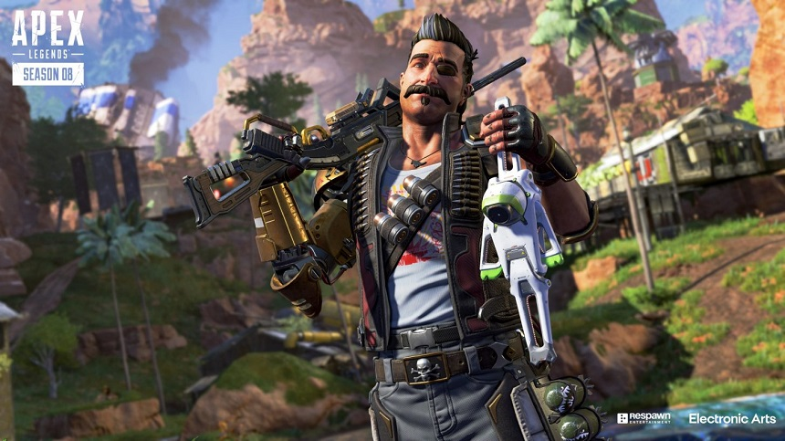
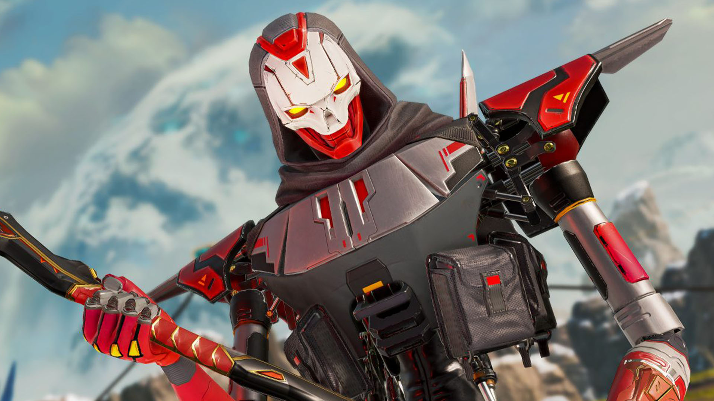
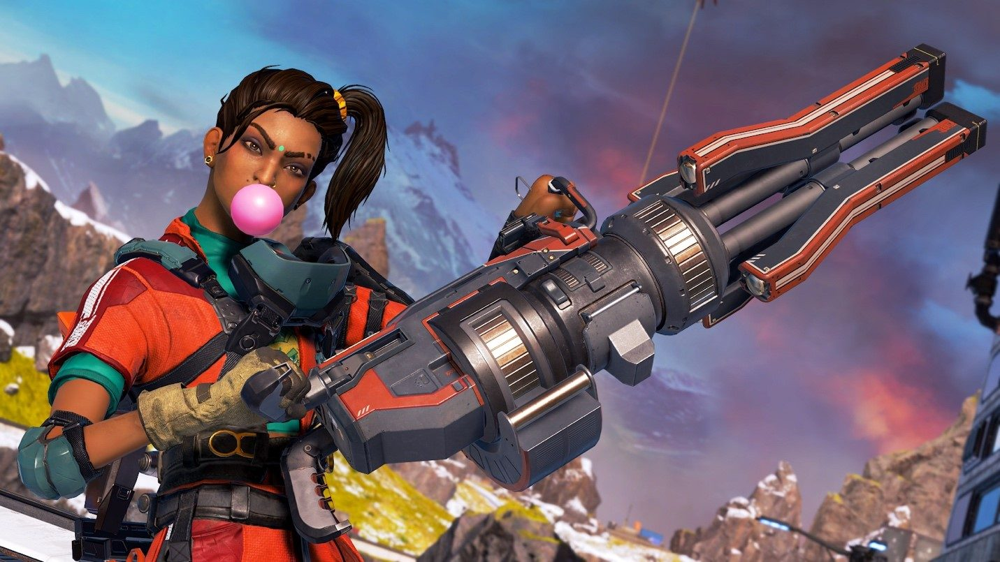
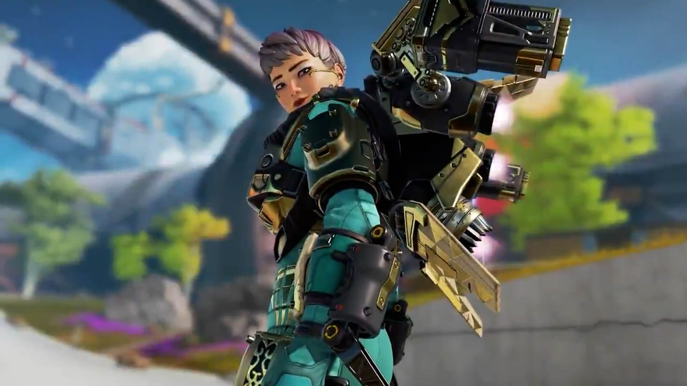
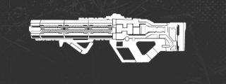
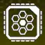
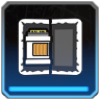

◾︎レジェンド調整 ヒューズ弱体化  ◾︎ウルト スキャン範囲の最大半径を450(デフォルトのリング)を上限に プレイヤーの操作範囲内で複数の対象物に対する迫撃砲による照準ができないように レブナント弱体化  ◾︎ウルト シールドの耐久値を75→50に引き下げ 起動にかかる時間を２倍に増加 ランパート強化  ◾︎ウルト シーラのタレットを再び使用できるまでの時間を1秒→0.15秒に短縮 ヴァルキリー大幅強化  ◾︎クラス スカーミッシャーからリコンに変化 ◾︎パッシブ ジェットパック使用中にパッシブ効果(スレットビジョン)が発動するように ジェットパックのUIに「燃料補給までの時間」のタイマーを追加 ジェットパックの操作性が向上（ヴァルキリー登場時と似た性能に） ◾︎戦術アビリティ 移動速度低下のスタン時間を50%増加 ミサイルの爆発範囲を20%拡大 最小攻撃範囲を25%減少(近くにいる敵に攻撃可能) ミサイルの最大移動時間を4.5秒→4秒に変更 全ミサイル発射時の発射速度を18→25に変更 ◾︎Lv2パーク エアリアルエキスパート(パッシブの水平方向への速度と加速度を上昇)が削除 フルカバー(戦術のミサイル数が4x3から3x5に増加)をLv3パーク→Lv2パークに変更し戦術アビリティのCTが5秒短縮する効果を追加 ◾︎Lv3パーク フルタンク(パッシブの燃料容量が25%増加)を取得時,燃料補給を再度行えるまでの時間を8秒→4秒に短縮 アイズインザスカイ(スカイダイブ中に壁越しに敵の位置をスキャンでき,スキャン範囲を40m拡大)を追加 ◾︎武器調整 ハボック弱体化  ターボチャージャー削除 R-99強化 10m以降のダメージが10→11に増加 反動の改善 ◾︎ホップアップ,アイテムの変更 ガンシールドジェネレーター  出現率低下 ターボチャージャー 削除 アルティメット促進剤  レア度を青→紫に引き上げ 出現率低下 使用中の移動速度を上昇